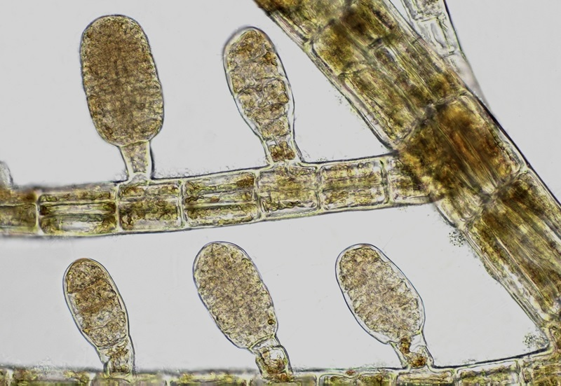

Chapter 8
üå± Algae - Primary Producers
Microscopic examination of algae structure, classification and ecological importance
Slide 1
Scenedesmus - Green Algae
Description:
Small colonies with 2, 4, or 8 cells arranged in a line
Cells are green due to chlorophyll
Some cells have spines for defense
Reproduces asexually by splitting
üìç Location:
- Found in ponds, lakes, and slow rivers
- Freshwater environments
⚙️ Role and Uses:
- Produces oxygen needed by aquatic animals
- Forms the base of the food chain, eaten by zooplankton
- Absorbs excess nutrients, helping reduce water pollution
- Used to monitor water quality
Slide 2
Pediastrum - Green Algae
Description:
Flat and circular or star-shaped colonies
Many connected cells
Green due to chlorophyll
Outer cells often have spines or lobes
Reproduces asexually by forming daughter colonies
üìç Location:
- Found in ponds, lakes, and slow-moving streams
- Freshwater environments
⚙️ Role and Uses:
- Produces oxygen for aquatic life through photosynthesis
- Serves as food for small aquatic animals like zooplankton
- Helps indicate the health of freshwater environments
- Can absorb excess nutrients, helping reduce water pollution
- Used in studies of algae biodiversity and water quality monitoring
Slide 3
Microcystis - Cyanobacteria (Blue-Green Algae)
Description:
Forms round or irregular colonies
Blue-green color from chlorophyll and phycocyanin
Colonies float on water surface and form dense scums
Reproduces asexually through binary fission
Can produce harmful toxins (microcystins)
üìç Location:
- Found in ponds, lakes, and nutrient-rich water bodies
- Forms floating colonies on water surface
⚙️ Role and Uses:
- Produces oxygen through photosynthesis but may cause water pollution
- Part of aquatic ecosystem but not commonly consumed by animals
- Can release microcystins, toxins harmful to fish, animals, and humans
- Used in scientific studies on water quality and harmful algal blooms
- Acts as an indicator of eutrophication in freshwater environments
Slide 4
Haematococcus - Green Algae
Description:
Spherical or oval unicellular algae with smooth cell wall
Bright green in normal conditions
Turns red under stress due to astaxanthin accumulation
Has motile stage with two flagella and nonmotile resting stage (cyst)
Cysts have thick cell walls for protection
üìç Location:
- Freshwater ponds, lakes, birdbaths
- Temporary water bodies
⚙️ Role and Uses:
- Performs photosynthesis and contributes to oxygen production
- Plays a role in aquatic ecosystems as a primary producer
- Source of natural astaxanthin used in nutraceuticals, cosmetics and aquaculture
- Studied for its stress resistance and commercial potential in biotechnology
- Acts as a bioindicator for water quality and environmental stress
Slide 5
Ankistrodesmus - Green Algae
Description:
Elongated, curved or needle-shaped cells
Often forming loose colonies
Green color due to chlorophyll
Cells usually occur singly or in small groups without mucilage
Nonmotile and reproduces asexually through autospores
üìç Location:
- Found in lakes, ponds, rivers
- Other freshwater habitats
⚙️ Role and Uses:
- Contributes to oxygen production through photosynthesis
- Important food source for small aquatic organisms like zooplankton
- Used in water quality studies and freshwater ecology research
- Can be cultured for biofuel and biomass production research
- Acts as a natural indicator of nutrient levels in freshwater systems
Slide 6
Gonium pectorale - Green Algae
Description:
Forms flat, plate-like colonies of 4-16 cells arranged in a single layer
Each cell has two flagella for coordinated colony movement
Cells are embedded in a gelatinous matrix and connected by cytoplasmic bridges
Green color due to chlorophyll a and b in chloroplasts
Reproduces both sexually and asexually depending on environmental conditions
üìç Location:
- Common in ponds, ditches, and shallow freshwater habitats
- Found in nutrient-rich freshwater environments
⚙️ Role and Uses:
- Produces oxygen through photosynthesis and supports aquatic ecosystems
- Important model organism for studying early multicellularity in green algae
- Used to understand cell cooperation and simple colonial organization
- Provides insight into evolutionary pathway from Chlamydomonas to complex colonies like Volvox
- Serves as food for small aquatic organisms and contributes to freshwater food chains
Slide 7
Closterium - Green Algae (Desmids)
Description:
Elongated and curved resembling a crescent or banana shape
Contains two symmetrical halves with a central constriction
Green color due to chloroplasts often with visible pyrenoids
Reproduces asexually and sexually through conjugation
üìç Location:
- Commonly found in ponds, lakes and wetlands
⚙️ Role and Uses:
- Contributes to oxygen production and supports aquatic life
- Used in water quality monitoring as an indicator species
- Helps study cell symmetry and reproduction in algae
- Part of the phytoplankton community in freshwater systems
- Sensitive to pollutants and environmental changes
Slide 8
Zygnema - Green Algae
Description:
Forms unbranched filaments made of cylindrical cells joined end to end
Each cell contains two star-shaped chloroplasts (key feature)
Appears green and often forms slimy floating mats on water surface
Reproduces asexually by fragmentation and sexually by conjugation
üìç Location:
- Found in ponds, streams and other still or slow-moving freshwater bodies
⚙️ Role and Uses:
- Produces oxygen and forms the base of freshwater food chains
- Used in studies of cell structure and sexual reproduction in algae
- Can act as a bioindicator of water quality and nutrient levels
- Provides shelter and food for small aquatic organisms
- Contributes to the biodiversity of freshwater ecosystems
Slide 9

Sphacelaria - Brown Algae
Description:
Forms branched filaments with specialized apical cell called sphacelus
Appears brown due to fucoxanthin mixed with chlorophyll
Grows in small tufts, visible as brown patches on surfaces
Reproduces asexually by spores and in some species sexually
üìç Location:
- Found in shallow coastal waters
- Attached to rocks, shells or other algae
⚙️ Role and Uses:
- Contributes to marine ecosystems as part of the seaweed community
- Provides shelter and food for small marine organisms
- Plays a role in oxygen production and nutrient cycling in coastal zones
- Used in research related to algal structure and development
- Adds to the biodiversity of marine habitats
Slide 10
Microspora - Green Algae
Description:
Forms unbranched filaments made of cylindrical cells
Each cell contains multiple chloroplasts without specific shape
Cells are separated by clear cross walls called septa
Reproduces asexually by fragmentation or zoospores
üìç Location:
- Found in ponds, streams and damp soils
⚙️ Role and Uses:
- Contributes to oxygen production through photosynthesis
- Acts as a food source for small aquatic organisms
- Used in ecological studies related to freshwater habitats
- Helps indicate water quality and presence of nutrients
- Plays a role in the base of freshwater food chains
Slide 11
Agardhiella - Red Algae
Description:
Forms soft, bushy and branched thalli
Reddish to purplish color due to phycoerythrin pigment
Cells arranged in filaments surrounded by gelatinous material
Reproduces through complex life cycles involving spores and gametes
üìç Location:
- Commonly found in tropical and subtropical marine habitats
- Attached to rocks or shells in shallow coastal waters
⚙️ Role and Uses:
- Contributes to oxygen production and marine biodiversity
- Used in the production of carrageenan, a natural thickener
- Studied for its ecological role in seaweed communities
- Provides shelter and food for small marine organisms
- Supports the structure and health of coastal ecosystems
Slide 12

Volvox - Colonial Green Algae
Description:
Round colonies made of thousands of individual cells
Each cell has two flagella and is embedded in jelly-like matrix
Colonies move in coordinated rolling motion
Reproduces both asexually and sexually depending on conditions
üìç Location:
- Lives in ponds, ditches and shallow freshwater bodies
⚙️ Role and Uses:
- Produces oxygen through photosynthesis
- Used in studies of cell cooperation and multicellularity
- Important model organism in developmental biology
- Indicator of healthy freshwater environments
- Forms part of the base of aquatic food chains
Slide 13

Eudorina - Green Algae
Description:
Forms small round colonies made of 16 to 64 individual cells
Each cell has two flagella for movement and is embedded in gelatinous matrix
Cells are similar in shape and arranged near outer surface of colony
Reproduces both asexually and sexually depending on environmental conditions
üìç Location:
- Found in ponds, ditches and slow-moving freshwater habitats
⚙️ Role and Uses:
- Performs photosynthesis and contributes to oxygen production
- Used in studies of colony formation and evolution of multicellularity
- Helps in understanding the transition from unicellular to colonial life forms
- Serves as food for small aquatic organisms
- Indicator of clean and nutrient-rich freshwater environments
Slide 14
Pandorina morum - Green Algae
Description:
Forms spherical or oval colonies of 8, 16 or 32 cells
Cells are pear-shaped with two flagella and embedded in mucilage
All cells in colony move together in coordinated motion
Reproduces both asexually and sexually under different conditions
üìç Location:
- Lives in ponds, lakes and other quiet freshwater environments
⚙️ Role and Uses:
- Performs photosynthesis and releases oxygen into the water
- Used in research on cell cooperation and early multicellularity
- Serves as food for small aquatic animals like protozoa and zooplankton
- Helps scientists understand evolutionary links between unicellular and colonial life
- Acts as an indicator of nutrient levels and water quality in freshwater systems
Slide 15
Polysiphonia and Porphyra - Red Algae
Description:
Polysiphonia has branched filamentous structure with central and surrounding cells
Porphyra has flat sheet-like thalli that are reddish or purplish
Both contain phycoerythrin pigment which gives them red color
Reproduce through complex life cycles involving alternation of generations
üìç Location:
- Found in intertidal and subtidal zones
- Attached to rocks or other algae
⚙️ Role and Uses:
- Important in marine ecosystems as primary producers
- Porphyra is harvested and eaten as nori in many cultures
- Polysiphonia is used in research on algal morphology and reproduction
- Both contribute to marine biodiversity and coastal habitat formation
- Used in education and scientific studies of red algae
Slide 16
Ectocarpus - Brown Algae
Description:
Consists of branched filaments with distinct cell walls
Contains brown pigments such as fucoxanthin giving it brown color
Exhibits alternation of generations with sporophyte and gametophyte stages
üìç Location:
- Found attached to rocks or other surfaces
- In intertidal and subtidal zones
⚙️ Role and Uses:
- Important in marine ecosystems for primary production and habitat formation
- Used in research to understand brown algal development, genetics and reproduction
- Helps study evolution of multicellularity and adaptation to marine habitats
Slide 17
Synura sp. - Freshwater Golden-Brown Algae
Description:
Forms colonies of numerous flagellated cells embedded in mucilaginous matrix
Covered with silica scales
Contains chlorophylls a and c, carotenoids, and fucoxanthin
Motile due to two unequal flagella on each cell
Life cycle includes vegetative reproduction and resting cysts
üìç Location:
- Found in freshwater lakes and ponds
- Spherical or oval cell aggregates
⚙️ Role and Uses:
- Plays crucial role as primary producer in freshwater ecosystems
- Silica scales contribute to sediment composition when colonies die
- Used as indicator of water quality in limnological studies
- Research helps understand algal ecology, motility mechanisms, and silica biomineralization
Slide 18
Dictyota - Brown Algae
Description:
Has flat, dichotomously branched fronds
Brown color comes from fucoxanthin pigment
Cells show distinct walls and internal structures under microscope
Reproduces through alternation of generations, including sexual and asexual stages
üìç Location:
- Commonly inhabits tropical and subtropical marine environments
- Grows attached to rocks or other substrates in shallow waters
⚙️ Role and Uses:
- Acts as primary producer in marine ecosystems
- Provides habitat and food for various marine organisms
- Studied for bioactive compounds with pharmaceutical and antifouling potential
- Plays role in maintaining marine biodiversity and coastal habitats
- Used in scientific research and ecological education
Slide 19
Ulva sp. - Green Algae (Sea Lettuce)
Description:
Flat, thin, green leaf-like thalli
Composed of two cell layers with chlorophyll a and b
Reproduces via alternation of generations
üìç Location:
- Found in marine and freshwater environments
- Grows attached to rocks or substrates in intertidal zones
⚙️ Role and Uses:
- Important primary producer in coastal ecosystems
- Provides food and habitat for marine life
- Used as human food, animal feed, and fertilizer
- Studied for biofuel production and water purification
Slide 20
Bangia sp. - Red Algae
Description:
Filamentous, thread-like thalli made up of cylindrical cells arranged in series
Contains phycoerythrin pigment which gives it reddish coloration
Reproduces through alternation of generations involving sexual and asexual phases
üìç Location:
- Found primarily marine, found mainly in ‏intertidal zones
- Grows attached to rocks or substrates in intertidal and subtidal zones
⚙️ Role and Uses:
- Functions as primary producer in coastal and freshwater ecosystems
- Provides habitat and food for various aquatic organisms
- Plays role in nutrient cycling and water quality maintenance
- Has potential uses in biotechnology, including food supplements and bioactive compounds